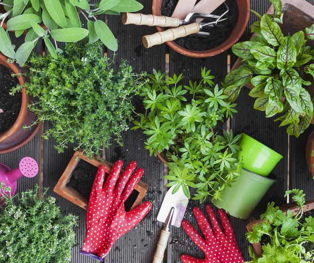

A fotografia é um hobby fascinante que envolve capturar momentos, paisagens, pessoas, e detalhes do cotidiano através de uma câmera. É uma forma de expressão artística que permite às pessoas verem o mundo sob diferentes perspectivas. Além de desenvolver a criatividade, a fotografia também ajuda a aprimorar o olhar para detalhes e a compreensão da luz e das cores. Com o avanço da tecnologia, é possível começar a fotografar com câmeras profissionais, semiprofissionais ou até mesmo com smartphones. Seja fotografando a natureza, eventos ou experimentando com técnicas de longa exposição, a fotografia oferece uma infinidade de possibilidades para explorar.
Dança
O que é a dança?
A dança é uma forma de expressão artística e física que envolve o movimento rítmico do corpo, geralmente ao som de música. Ela pode ser usada para contar histórias, expressar emoções, ou simplesmente para se divertir e manter a forma física. A dança abrange uma variedade de estilos e tradições culturais, desde danças clássicas como o balé e a dança contemporânea, até danças populares e sociais como o hip-hop e a salsa. Cada estilo de dança tem suas próprias técnicas, ritmos e significados, mas todos compartilham a mesma essência de comunicação através do movimento.
Criação de Histórias
O que é a criação de histórias?
A criação de histórias é o processo de inventar e desenvolver narrativas, sejam elas fictícias ou baseadas em experiências reais. Envolve a concepção de personagens, enredos, cenários e diálogos, com o objetivo de contar uma história que ressoe emocionalmente com o público. Esse hobby pode se manifestar em várias formas, como escrita de contos, romances, roteiros para cinema ou TV, quadrinhos, e até mesmo em jogos interativos. A criação de histórias permite que você explore a imaginação, expresse ideias e emoções, e conecte-se com os outros através de narrativas envolventes e criativas.
Pintura
O que é a pintura?
A pintura é uma das formas mais antigas e universais de expressão artística. Com raízes que remontam a tempos pré-históricos, a pintura permite aos artistas traduzirem suas visões, emoções e ideias em imagens vibrantes e significativas. Seja com tintas acrílicas, óleo ou aquarela, a pintura transforma uma superfície simples em uma obra de arte cheia de cor e vida.
Explorar a pintura pode ser uma jornada fascinante, desde a escolha dos materiais até a experimentação com diferentes técnicas e estilos. Os pintores podem criar obras realistas, abstratas ou impressionistas, cada uma oferecendo uma nova maneira de ver e interpretar o mundo ao nosso redor.
Este hobby não só proporciona uma maneira criativa de relaxar e se expressar, mas também conecta você com uma rica tradição artística que continua a evoluir. Se você está começando ou já tem experiência, a pintura oferece uma infinidade de possibilidades para explorar e desfrutar.
Leitura
O que é a leitura?
A leitura é uma das atividades mais enriquecedoras e transformadoras que alguém pode adotar. Seja mergulhando em romances cativantes, explorando universos de fantasia, ou absorvendo conhecimento através de livros de não-ficção, a leitura oferece uma porta para mundos infinitos e perspectivas diversas. Além de ser uma excelente forma de entretenimento, a leitura estimula a imaginação, melhora o vocabulário e a compreensão, e pode até mesmo ajudar a desenvolver empatia ao permitir que os leitores vejam o mundo pelos olhos de outros. Para aqueles que procuram momentos de tranquilidade e reflexão, o hábito de ler pode ser um verdadeiro refúgio.
Jardinagem

O que é a jardinagem?
A jardinagem é um hobby que permite cultivar a beleza da natureza em seu próprio espaço, seja em um grande quintal ou em pequenos vasos dentro de casa. Cuidar de plantas, flores e hortaliças é uma atividade que traz paz, satisfação e uma conexão profunda com o ciclo da vida. Além de ser terapêutica e relaxante, a jardinagem também oferece benefícios tangíveis, como a produção de alimentos frescos e a criação de ambientes mais verdes e saudáveis. Para muitos, ver uma planta florescer ou colher os frutos de seu trabalho é uma recompensa que vale todo o esforço dedicado. Este hobby, além de promover a paciência e a atenção aos detalhes, nos lembra da importância de cuidar do mundo ao nosso redor.
Benefícios:
Ter um hobby te traz benefícios?
Já parou para pensar que um hobby pode ocupar sua mente, proporcionar prazer e vários outros benefícios? Já se sentiu
desanimado, cansado, estressado e cheio de pensamentos negativos?
Saiba que ter e praticar um hobby pode ser uma solução para mudar o seu estado emocional , além de ser extremamente
benéfico para qualquer pessoa. Então, mesmo se você tiver uma agenda cheia, é importante destinar um tempo para
atividades de lazer e a prática de hobbies.
O nosso cotidiano muitas vezes nos deixa cansados física e mentalmente, o que ocasiona aumento do estresse e sobrecarga
emocional. Por mais que você ame o que faz (e eu espero que assim seja!), o interessante é desenvolver um hobby
diferentes das suas atividades profissionais e que te tragam satisfação.
Assim, você descansa a sua mente das atividades rotineiras e desenvolve mais neurônios. Isso, você aumenta a sua
plasticidade cerebral, ou seja, é possível reverter o envelhecimento do cérebro por meio da prática de algumas
atividades como a leitura, um instrumento musical, um novo idioma.
Confira alguns benefícios:
Redução do Estresse: Engajar-se em um hobby oferece uma pausa mental das obrigações
diárias,
ajudando a reduzir o
estresse e promover relaxamento.
Desenvolvimento de Habilidades: Hobbies permitem que você aprenda novas habilidades ou melhore as que já possui, seja
através da prática criativa, esportes, ou outros interesses.
Socialização e Conexões: Muitos hobbies, como esportes ou atividades em grupo, proporcionam oportunidades de
socialização e ajudam a construir novas amizades e conexões.
Aumento da Criatividade: Hobbies como pintura, escrita ou música estimulam a criatividade e ajudam a desbloquear o
pensamento inovador, o que pode ser útil em outras áreas da vida.
Melhoria da Saúde Mental: Atividades prazerosas podem melhorar o humor e ajudar a combater a ansiedade e a depressão,
proporcionando um sentido de realização e satisfação.
Hobbies na Tendência:
Jardinagem Urbana
Por quê está na tendência?
A jardinagem urbana tem se tornado uma tendência crescente nos últimos anos, impulsionada por uma busca por
sustentabilidade, conexão com a natureza e bem-estar pessoal. Em um mundo cada vez mais urbano e digital, muitas pessoas
estão encontrando na jardinagem uma maneira de desacelerar e cultivar um espaço verde, mesmo em ambientes pequenos. Além
disso, a conscientização sobre a importância da alimentação saudável e a redução do impacto ambiental tem levado muitos
a cultivar suas próprias hortas e plantas em varandas, janelas e pequenos jardins. A jardinagem urbana não é apenas uma
atividade relaxante, mas também uma forma de contribuir para a sustentabilidade e trazer um pouco de natureza para
dentro das cidades.
Artesanato Digital
Por quê está na tendência?
O artesanato digital está em ascensão, à medida que a tecnologia se torna cada vez mais acessível e as possibilidades
criativas se expandem. Com ferramentas digitais sofisticadas, desde software de design até tablets gráficos, artistas e
entusiastas estão explorando novas maneiras de criar e expressar suas ideias. O artesanato digital permite uma
experimentação sem limites, seja na criação de ilustrações, design gráfico, animações, ou até mesmo na produção de NFTs
(tokens não fungíveis). Essa tendência está atraindo tanto profissionais quanto iniciantes, oferecendo uma plataforma
para explorar a criatividade de maneira inovadora e compartilhar seu trabalho com um público global.
Culinária Experimental
Por quê está na tendência?
A culinária experimental tem ganhado destaque como um hobby apaixonante, especialmente com o crescente interesse em
explorar novas culturas e sabores. Movida pela curiosidade e pela influência das redes sociais, essa tendência envolve a
experimentação de receitas inovadoras, técnicas culinárias diferentes e ingredientes exóticos que desafiam o paladar.
Pessoas de todas as idades estão se aventurando na cozinha, testando combinações únicas e reinventando pratos
tradicionais. A culinária experimental não é apenas sobre preparar refeições; é uma forma de arte e expressão, onde cada
prato se torna uma oportunidade de criar algo novo e emocionante.